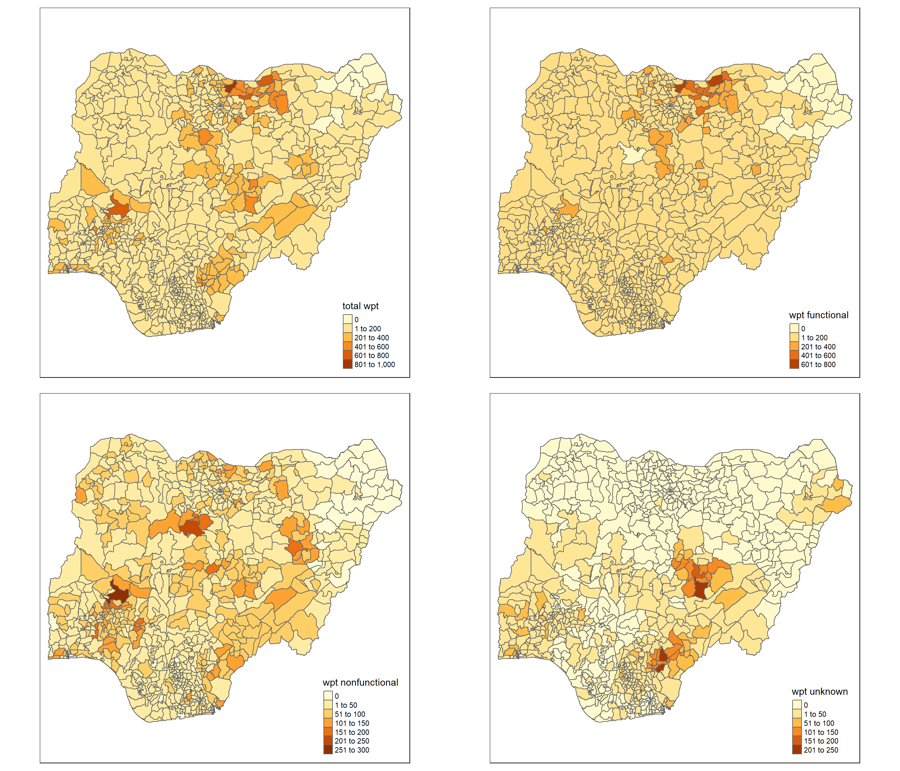
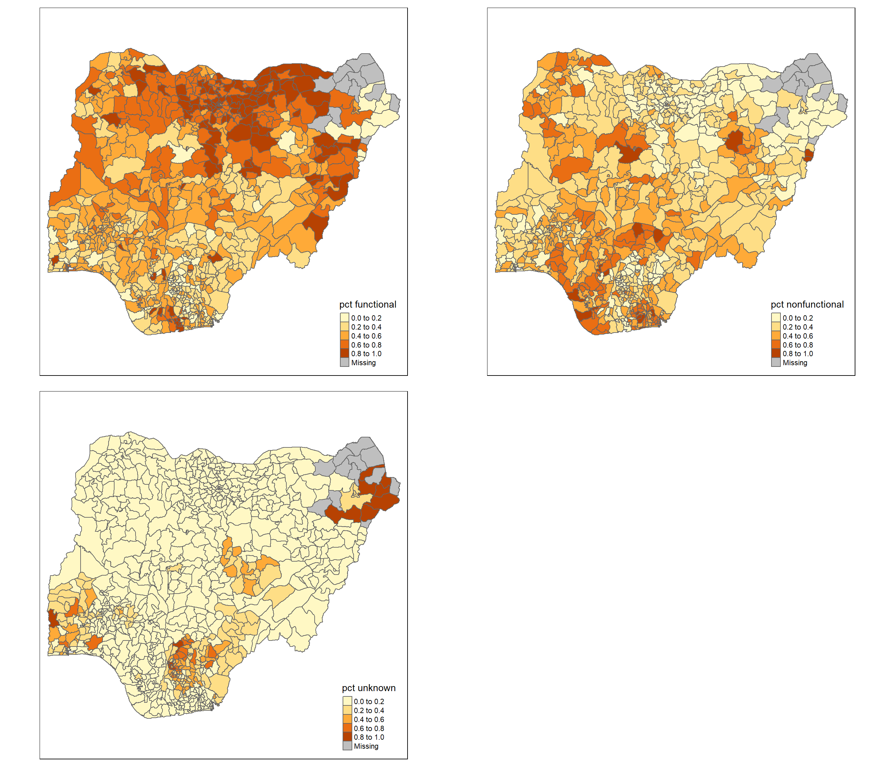

pacman::p_load(sf,tidyverse,spdep,tmap,funModeling)In-class Exercise 2
Overview
In this take home exercise, we will apply appropriate global and local measures of spatial association techniques to reveal the spatial patterns of Non-Functional water points in Nigeria.
Data Set
Aspatial Data
WPdx+ dataset of Nigeria in csv format was downloaded WPdx (Water Point Data Exchange) Global Data Repositories. The dataset contains water points related data from rural areas at the water point or small water scheme level. The dataset will be re-named as geo_export.csv saved under data/aspatial folder.
Geospatial data
Nigeria Level-2 Administrative Boundary (also known as Local Government Area) polygon features GIS data was downloaded from geoBoundaries portal. The file names were “geoBoundaries-NGA-ADM2” with different file formats and saved under data/geospatial folder.
Getting Started
First, we will install and download relevant packages for this exercises by using p_load() under pacman packages.
sf for importing, managing and processing geospatial data, and
tidyverse for performing data science tasks such as importing, wrangling and visualizing data, and
spdep for computing spatial weights, global and local spatial autocorrelation statistics, and
tmap for preparing cartographic quality choropleth map
funModelling for exploratory data analysis, particularly for the DEA analysis in the later part
Importing data
Importing aspatial data in csv format
Since geo_export data set was downloaded in csv format, read_csv() function is used to read to import geo_export.csv
wp<-read_csv("data/aspatial/geo_export.csv")
glimpse(wp)From the above message, there are in total 95008 observations with 70 columns.
The below code chunks provides the list for wp object:
list(wp)Creating a simple data feature data frame from an aspatial data frame
The below code chunks convert wp data frame into a simple feature data frame (sf object) by using st_as_sf() function of sf packages:
wp_sf<-st_as_sf(wp,coords=c("#lon_deg","#lat_deg"),crs=4326)Things to learn from the above code chunks:
coords argument requires us to provide the column name of x-coordinates followed by the column name of y-coordinates.
crs argument requires us to provide the coordinate system in EPSG format. EPSG 4326 is the WGS84 Geographic Coordinates System.
In order to learn more about the attributes of the newly created sf object, we use the following code chunks:
glimpse(wp_sf)We can also view the coordinates system of wp_sf by using the below code chunks:
st_crs(wp_sf)We then save the extracted data which is (wp_sf) into an output file in rds data format. The output file is called wp_nga.rds and saved under geospatial sub-folder.
write_rds(wp_sf,"data/geospatial/wp_nga.rds")Importing polygon feature data in shapefile format
In the below code chunks, we use st_read() function of sf package to import geoBoundaries-NGA-ADM2 Shapefile into R as a polygon feature data frame. Note that there are 2 arguments used when the input geospatial data is in shapefile format, namely: dsn to define the data path and layer to provide the Shapefile name. Notice that we do not need to indicate file extension.
nga<-st_read(dsn="data/geospatial",layer="geoBoundaries-NGA-ADM2",crs=4326)From the above summary, we learn that the geometry type is Multipolygon. There are in total 774 features and 70 columns.
We can confirm the coordinates system again by using the st_crs() function of sf package.
st_crs(nga)We can use st_geometry() function of sf package to retrieve the basic information on the type of geometry, the geographic extent of the features, and the coordinates system of the data.
st_geometry(nga)We can plot only the geometry of Nigeria using the below code chunk:
plot(st_geometry(nga))However, some of the values under the the column #status_clean,which we need to use in the analysis to identify the working condition of the water points, are NA. Therefore, additional step required to replace NA values to Unknown.
wp_nga<-read_rds("data/geospatial/wp_nga.rds") %>%
mutate(`#status_clean` = replace_na(`#status_clean`,"Unknown"))In the above code chunks, the newly created wp_nga.rds file was read and mutate() function of dplyr package was used to amend those NA values under column #status_clean to Unknown values.
Exploratory Data Analysis (EDA)
We then plot a frequency table based on the column #status_clean using the below code chunk:
freq(data=wp_nga,input="#status_clean")freq() of funModelling package mentioned above is used to generate and format frequency tables from a variable or a table, with percentages and formatting options.
From the above frequency table, we can group those under “Functional”, “Functional but needs repair”,“Functional but not in use” and categorize them as “Functional Water Points”, while those under “Non-Functional”,“Non-Functional due to dry season”,“Abandoned/Decommissioned”,“Abandoned”,“Non functional due to dry season” are categorized as “Non-Functional Water Points”. Keep this in mind for the rest of the analysis.
Geoprocessing with sf package
In this section, we will perform a wide range of geoprocessing with one commonly used geogprocessing functions: point in polygon count.
However, we will need to extract relevant data about the number of water points first under different categories: function, non-function and unknown.
Extracting functional water points
In the code chunks below, filter() of dplyr package is used to select functional water points.
wpt_functional <-wp_nga %>%
filter(`#status_clean` %in%
c("Functional","Functional but needs repair","Functional but not in use"))Plotting frequency table of functional water points
freq(data=wpt_functional,input="#status_clean")Extracting non-functional water points
In the code chunks below, filter() of dplyr package is used to select non-functional water points.
wpt_nonfunctional<-wp_nga %>%
filter(`#status_clean` %in%
c("Non-Functional","Non-Functional due to dry season","Abandoned/Decommissioned","Abandoned","Non functional due to dry season"))Plotting frequency table of non-functional water points
freq(data=wpt_nonfunctional,input="#status_clean")Extracting unknown water points
In the code chunks below, filter() of dplyr package is used to select unknown water points.
wpt_unknown<-wp_nga%>%
filter(`#status_clean`=="Unknown")Performing Point-in-Polygon Count
nga_wp<-nga %>%
mutate(`total wpt`=lengths(st_intersects(nga,wp_nga)))%>%
mutate(`wpt functional`=lengths(st_intersects(nga,wpt_functional)))%>%
mutate(`wpt nonfunctional`=lengths(st_intersects(nga,wpt_nonfunctional)))%>%
mutate(`wpt unknown`=lengths(st_intersects(nga,wpt_unknown)))In the above code chunks, these are the below operations done:
First, st_intersects() function helps identify the water points under these 4 categories (set in the previous part): total, functional, non-functional and unknown, respectively in each area unit.
Next, lengths() function of Base R helps calculate the number of water points for each category: total, functional, non-function and unknown that fall into each area unit.
Last, mutate() function helps create the new columns for the newly calculated values and name them as
total wptwpt functionalwpt nonfunctionalwpt unknown.
We can check the summary statistics of the newly derived fields of total wpt wpt functional wpt nonfunctional wpt unknown using the below code chunks:
summary(nga_wp$`wpt functional`)
summary(nga_wp$`wpt nonfunctional`)
summary(nga_wp$`wpt unknown`)Calculating the proportion of number of functional, non-functional and unknown water points to the total number of water points for each area unit
The below code chunks compute the proportion of functional, non-functional and unknown water points to the total number of water points for each area unit. The code chunks also name the newly created fields as pct functional, pct nonfunctional, pct unknown. These fields will be very crucial in our analysis for the rest of the exercise.
nga_wp<-nga_wp%>%
mutate(`pct functional`=`wpt functional`/`total wpt`)%>%
mutate(`pct nonfunctional`=`wpt nonfunctional`/`total wpt`)%>%
mutate(`pct unknown`=`wpt unknown`/`total wpt`)%>%
select(1,3,6:13)
nga_wpDo note that the above select() function selects the relevant fields to keep for further analysis. In this case, we keep ShapeName (column 1), shapeID (column 3), from total wpt column to geometry column (column 6 to 13).
We then use write_rds() function below to create a new data file with a much smaller size of 2.1MB.
write_rds(nga_wp,"data/geospatial/nga_wp.rds")Visualizing the spatial distribution of number of water points
In the below code chunks, we graph a simple map of the spatial distribution of the number of functional, non-functional and unknown water point at LGA level.
nga_wp<-read_rds("data/geospatial/nga_wp.rds")
total<-qtm(nga_wp,"total wpt")
wp_functional<-qtm(nga_wp,"wpt functional")
wp_nonfunctional<-qtm(nga_wp,"wpt nonfunctional")
wp_unknown<-qtm(nga_wp,"wpt unknown")
tmap_arrange(total,wp_functional,wp_nonfunctional,wp_unknown,asp=1,ncol=2)
Visualizing the spatial distribution of water point rates
In the below code chunks, we graph a simple map of the spatial distribution of functional, non-functional and unknown water point rates at LGA level. However, our focus for this exercise will be more on the non-functional water point rate.
pct_functional<-qtm(nga_wp,"pct functional")
pct_nonfunctional<-qtm(nga_wp,"pct nonfunctional")
pct_unknown<-qtm(nga_wp,"pct unknown")
tmap_arrange(pct_functional,pct_nonfunctional,pct_unknown,asp=1,ncol=2)
Notice that there are “Missing values” in all three maps. It was due to NaN values under the corresponding volumes for pct functional, pct nonfunctional, pct unknown as some of the regions do not have any water points at all, thus dividing by 0. More details and further processing will be covered under Distance based weight matrix below.